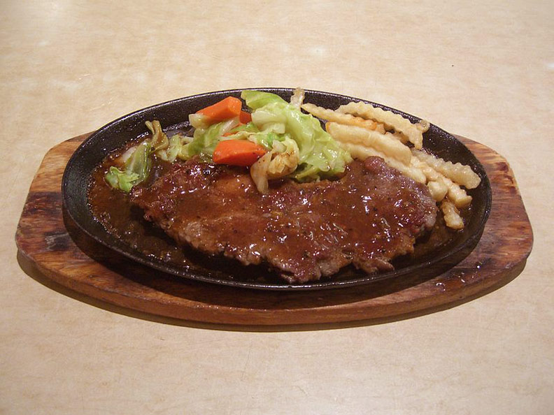
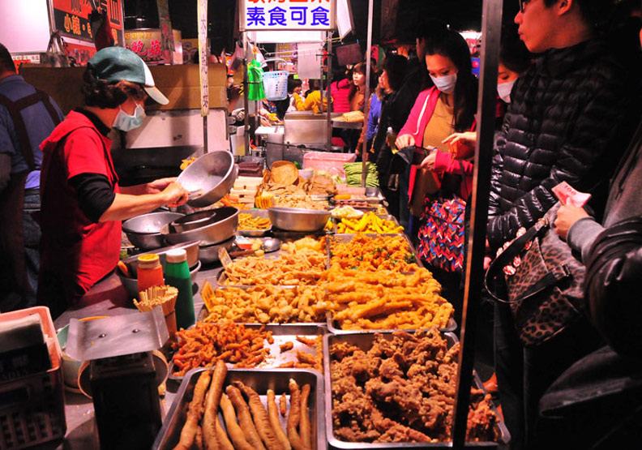
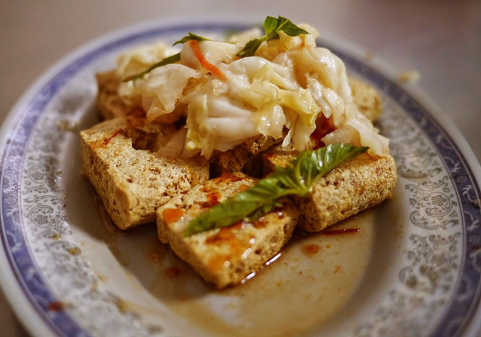
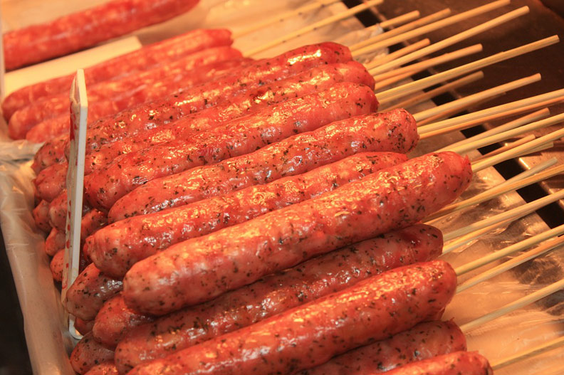
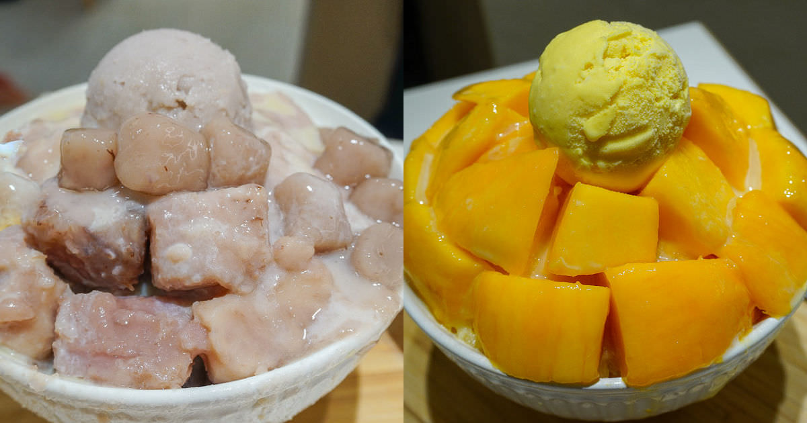
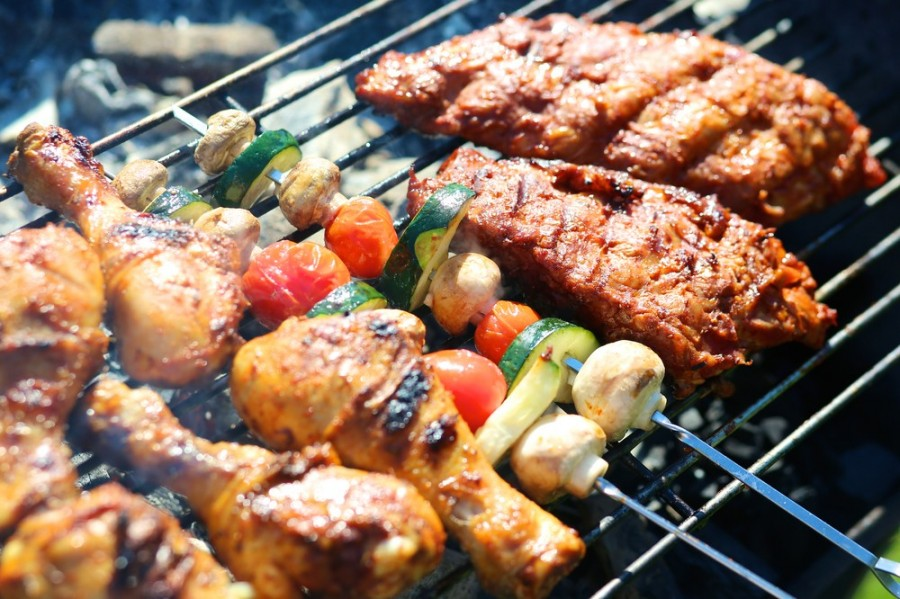
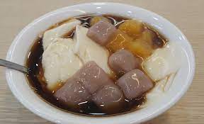
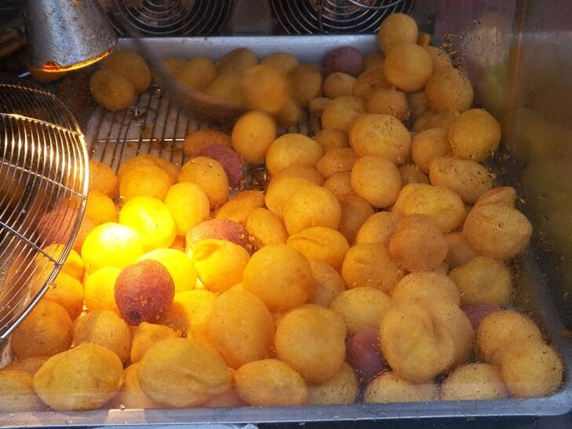
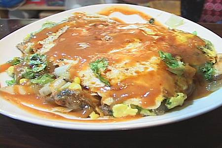
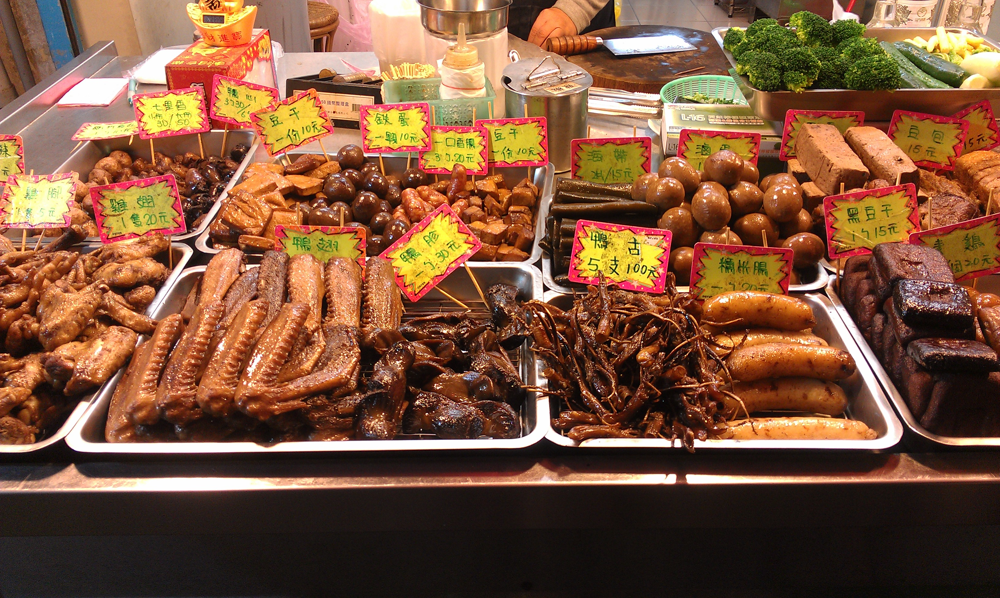

1.牛排
鐵板牛排ㄧ獨特的鐵板焦香味，看起來很陽春，也比不上高級牛排餐廳，確實讓人想一吃再吃的庶民美食，在夜市隨處可見，突然想吃牛排大餐嗎？走進夜市裡就能滿足這突如其來的高檔心願啊！
2.雞排、鹹酥雞
炸得又香又酥的雞排和鹹酥雞，大口咬下滿滿雞汁，配上蒜頭香、九層塔香，撒墊胡椒和辣粉，光是用想的就口水直流，尤其台灣的雞肉品質實在不是普通的優質，鮮嫩可口不柴不乾，怎麼炸都讓老外喜歡得不得了！
3.臭豆腐
臭豆腐是台灣夜市裡有些人愛得要死、有些人怕得要命的美食，不管是炸的臭豆腐還是滷的，獨特的「香味」讓人難忘，酥炸臭豆腐配上清爽泡菜，滷得入味又臭又香的豆腐搭上麻辣鴨血，兩種吃法都大有人愛呀！
4.香腸、大腸包小腸
俗稱「台式熱狗」的大腸包小腸，90年代開始在台灣夜市流行，烤過的糯米腸切開夾住烤過的香腸，用炭火烤熟後，再隨個人喜好和店家特色，加上大蒜和酸菜即成，豐富一點的還會加入香菜、花生粉、酸菜、大蒜、九層塔、黑胡椒醬等，口感升級不說，層次整個被提升到另一個境界啊！
5.冰品
夜市逛到累了熱了，就想走到冰攤來一碗沁涼的挫冰，加入自己喜歡的配料和淋醬，又或者來一碗綿密的雪花冰，降溫解熱透心涼，嗑完一碗又能走進夜市繼續戰鬥！
6.碳烤串燒
夜市裡的炭烤串燒攤位前，總是會有滿滿的人潮，各式各樣的選擇，再加上讓人沒什麼負擔的銅板價，讓人一出手不知不覺就是一大袋，想吃烤肉串又不想弄得家裡一陣燒烤油味的，帶夜市串燒回家當下酒菜是最完美又方便的選擇啊！
7.豆花、芋圓甜湯
夜市裡的豆花集各式芋圓甜湯，無論冬季還是夏天，都很受歡迎，濃醇豆香的豆花，在逛夜市時來上一碗，消暑解饞，甜湯裡有著滿滿Q勁十足的芋圓地瓜圓，口感讓人好滿足呀！
8.地瓜球
外皮炸得酥脆，內餡有點QQ又不膩口甜的地瓜球，還有和它一樣可口的芋丸，兩個都是夜市小吃界大人小孩都好喜歡的小點心，熱呼呼的一口一顆，越吃越涮嘴，近年更有許多新吃法，撒上各式各樣的調味粉，讓地瓜球的口味更多變。
9.蚵仔煎
蚵仔煎和蝦仁煎是幾乎每個台灣夜市都能看到吃到的小吃，新鮮滑嫩的蚵仔放在煎板上滋滋作響，再加入勾芡水，淋上蛋汁，皮薄又有著濃郁焦酥煎蛋香的蚵仔煎，最後再淋上有點甜甜的醬汁，又鮮又美味！
10.冷熱滷味
夜市滷味無論是有湯汁的熱滷味，還是涼拌的冷滷味，入味的各種食料兜在一起，當正餐宵夜或是點心，都讓人滿足到不行，有些店家還會有祕製滷汁和辣醬，讓人頭次光顧就成主顧啊！